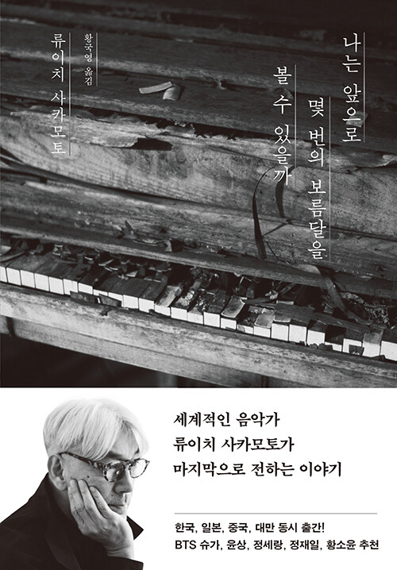

자세히 보기
제목 : 아주 희미한 빛으로도
줄거리 : 『아주 희미한 빛으로도』에 담긴 7편의 중단편은 조곤조곤 이야기를 시작하다가도 어느 순간 이야기의 부피를 키우면서 우리를 뜨거운 열기 한가운데로 이끄는 몰입력과 호소력이 돋보인다
줄거리 : 『아주 희미한 빛으로도』에 담긴 7편의 중단편은 조곤조곤 이야기를 시작하다가도 어느 순간 이야기의 부피를 키우면서 우리를 뜨거운 열기 한가운데로 이끄는 몰입력과 호소력이 돋보인다
자세히 보기

제목 : 눈에 갇힌 외딴 산장에서
줄거리 : 히가시노 게이고의 본격 추리물, 특히 베스트셀러 『가면 산장 살인 사건』에 열광했던 독자라면 무척 반길만 한 또 하나의 ‘클로즈드 서클’, 이른바 ‘밀실 살인’을 소재로 다룬 작품이다.
줄거리 : 히가시노 게이고의 본격 추리물, 특히 베스트셀러 『가면 산장 살인 사건』에 열광했던 독자라면 무척 반길만 한 또 하나의 ‘클로즈드 서클’, 이른바 ‘밀실 살인’을 소재로 다룬 작품이다.
자세히 보기

제목 : 나는 앞으로 몇 번의 보름달을 볼 수
있을까
줄거리 : 시대를 대표하는 예술가이자 활동가 류이치 사카모토가 살아생전 마지막으로 전하는 이야기 그가 삶의 마지막 고비에서 되돌아본 인생과 예술, 우정과 사랑, 자연과 철학, 그리고 시간을 뛰어넘어 오래도록 기억될 그의 음악과 깊은 사유에 관한 기록
줄거리 : 시대를 대표하는 예술가이자 활동가 류이치 사카모토가 살아생전 마지막으로 전하는 이야기 그가 삶의 마지막 고비에서 되돌아본 인생과 예술, 우정과 사랑, 자연과 철학, 그리고 시간을 뛰어넘어 오래도록 기억될 그의 음악과 깊은 사유에 관한 기록